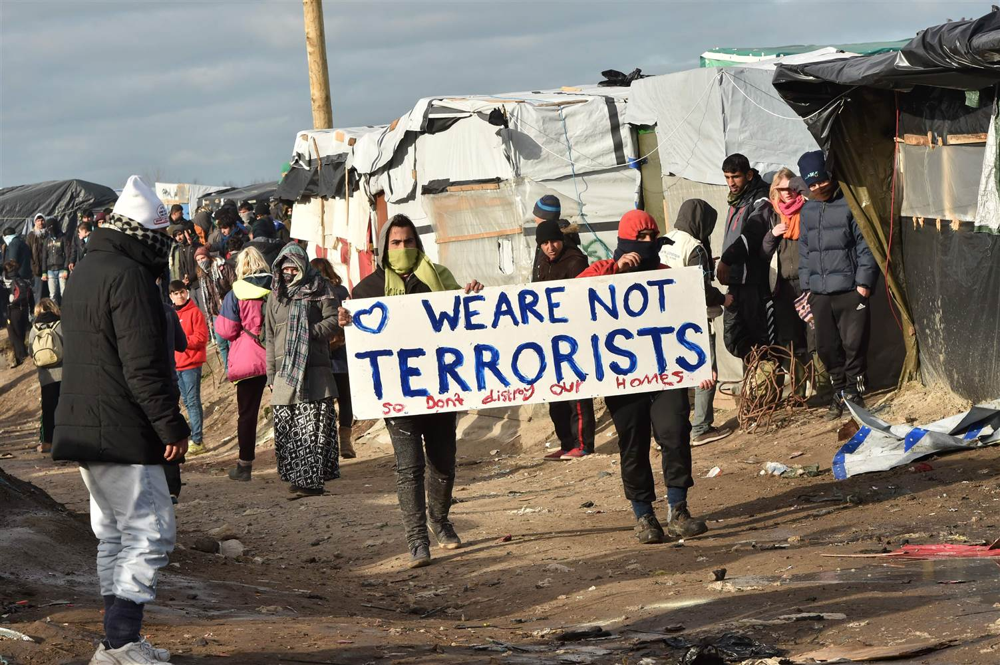

Causes and Effects of the Iraq War
On March 20, 2003 President George W. Bush formally announced the start of a war in Iraq. This war had begun for a multitude of reasons. After the horrific events that took place after 9/11, many Americans...
Drone Strikes: More Than Meets the Eye? – REPOST
The Obama administration has used unmanned aerial vehicles (UAVs) ten times more than any other administration. The exponential increase in the use of these mobile weapons has reinforced much of the public’s preexisting notion about...
 The Case for Syrian Refugees
In 2011, the Arab Spring began in the Middle East and with that came the overthrowing of dictatorships around the area. It began in Tunisia with the overthrowing of Zine El Abidine Ben Ali on January 25, 2011 and followed with...
The Conflict Over Kashmir
On August 14th 1947, British India was partitioned to India and Pakistan. Kashmir, an area of land that fell between Pakistan and India, was preoccupied by many ethnicities. It was broken down into three different areas: Ladakh...